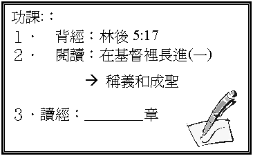

引言
記不記得上次我們學過甚麼？
一個信主的人怎樣肯定自己得救？
你又認為得救後的人和未信前有甚麼不同的地方？
一．
得救的改變（林後5:17）
1.
『若有人在基督裏』，甚麼叫『在基督裏』?
你是否在基督裏?（參看羅16:7）
2.
在基督裏的人會有甚麼改變？
3.
你認為自己在信主後有甚麼『新的了』?
有甚麼『已過』（不同）？
二．
新人的特質（歌羅西書3:10）
1.
這新人有甚麼特質？
何謂『在知識上』？
是否一次可以做達到？
2.
新人最終他會像誰？
在你認識的基督徒朋友中，有沒有發現一些因人信了主而有很大的更新，真像耶穌的？
三．
舊人的脫去（歌羅西書3:5-9）
1.
聖經提到『舊人』（未信時的老我／地上的肢體／肉體），有甚麼敗壞特質？
2.
你以前最常犯的是那幾種？
3.
當我們信了主後，聖經教我們要怎樣處理『舊人』或『舊人的敗壞』？
有甚麼特別的『字眼』？ 又有甚麼意思？
4.
若我們偶然返回舊人樣式，犯錯得罪神，可怎做？
（詩51:1-2、10、17）
四．新人的穿上（歌羅西書3:12-15）
1.
v10提到穿上新人，你認為一個新人應有甚麼表現？
2.
v12-14一個新人要存／穿上一個怎樣的心？
這刻你最想追求是那一種心？ 為甚麼？
3.
v15又教我們人生應以誰作我們的主？
是否照自己的意思作主呢？ 有沒有經歷過『以基督的平安在你們心裏作主』（可能有掙扎，但最終都順服主的經歷）？
4.
在你生命中（包括時間、金錢、衣著、性格、情緒、娛樂、愛情、家庭、學業、工作、作息等）那一方面最易讓主作主，那一方面最難呢？
總結：一個新人應有甚麼表現？
要脫去甚麼？ 穿上甚麼？
